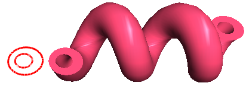

Spiral solids.
Let's create a spiral solid with a circle-clip and a round hole.
This code creates the circles:
SG_CIRCLE cirGeo1;
SG_POINT cirC1 = {2.0, -2.0, 0.0};
SG_VECTOR cirNor1 = {0.0, 0.0, 1.0};
cirGeo1.FromCenterRadiusNormal(cirC1,3.0, cirNor1);
sgC2DObject* cir1 = sgCreateCircle(cirGeo1);
sgGetScene()->AttachObject(cir1);
cir1->SetAttribute(SG_OA_COLOR,12);
cir1->SetAttribute(SG_OA_LINE_THICKNESS, 2);
SG_CIRCLE cirGeo2;
SG_POINT cirC2 = {2.0, -2.3, 0.0};
SG_VECTOR cirNor2 = {0.0, 0.0, 1.0};
cirGeo2.FromCenterRadiusNormal(cirC2,1.5, cirNor2);
sgC2DObject* cir2 = sgCreateCircle(cirGeo2);
sgGetScene()->AttachObject(cir2);
cir2->SetAttribute(SG_OA_COLOR,12);
cir2->SetAttribute(SG_OA_LINE_THICKNESS, 2);
The axis of the spiral will lie on the (6, -3, 0) and (6, 3, 0) points. Length of a spiral step will be 12, the spiral length - 30, and the number of meridians on the one spiral step circle will be 16:
SG_POINT axeP1 = {6.0, -3.0, 0.0};
SG_POINT axeP2 = {6.0, 3.0, 0.0};
sgC3DObject* spirO = (sgC3DObject*)sgKinematic::Spiral((const sgC2DObject&)(*cir1),
(const sgC2DObject**)(&cir2),1,
axeP1,axeP2,12,30,16,true);
sgGetScene()->AttachObject(spirO);
spirO->SetAttribute(SG_OA_COLOR,56);
Then we'll move the obtained solid:
SG_VECTOR transV1 = {0,7,0};
spirO->InitTempMatrix()->Translate(transV1);
spirO->ApplyTempMatrix();
spirO->DestroyTempMatrix();
See also:
sgGetScene sgCScene::AttachObject sgCObject::SetAttribute
Illustration:
